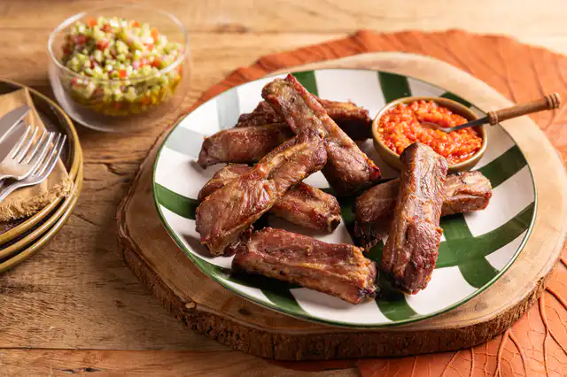

Home
Costelinha

COSTELINHA DE PORCO NA AIR FRYER
A Air Fryer faz até churrasco. Esta receita é ideal para o almoço entre amigos ou com a família, sem precisar de carvão nem churrasqueira. É só temperar e mandar para o cestinho. Pense só em uma carne tostadinha e suculenta… humm!
Ingredientes
- 1 kg de costela de porco (cerca de 8 ripas)
- 1 colher (sopa) de azeite
- 1 colher (chá) de sal
- pimenta-do-reino moída na hora a gosto
Modo de Preparo
- Caso a costelinha de porco esteja inteira, corte a peça em ripas — posicione a faca bem no meio, entre um ossinho e outro, para que todos os pedaços fiquem com carne dos dois lados.
- Transfira a costelinha para uma tigela grande e tempere com o sal e pimenta a gosto. Regue com o azeite e misture bem com as mãos para envolver todos os pedaços.
- Preaqueça a Air Fryer de 3,2 litros da linha Electrolux por Rita Lobo a 200 ºC e programe para assar por 30 minutos.
- Abra o cesto e coloque toda a costelinha — as ripas vão ficar sobrepostas mesmo, não tem problema. Feche a gaveta e deixe assar por 30 minutos. Atenção: a cada 10 minutos, abra o cesto e vire as costelinhas com uma pinça, colocando as mais douradas para baixo e as menos cozidas para cima, para que todas dourem de maneira uniforme.
- Após os 30 minutos, dê uma olhada; caso necessário, deixe assar por mais 5 minutos (isso pode variar de acordo com a peça de costelinha escolhida; algumas têm mais gordura e mais carne que outras). Assim que as costelinhas estiverem douradas, sequinhas na superfície e a carne ainda suculenta, estarão prontas. Sirva a seguir.
Obs.: se preferir, pode temperar a costelinha com antecedência e manter na geladeira até 24 horas antes de assar; ela fica ainda mais gostosa.